開始前請確認：已有官方會員帳號、已報名比賽，並在牌組登錄截止日前完成登錄。標準賽事牌組為 60 張。
1登入官網，進入「我的牌組」
登入寶可夢卡牌官方網站的會員帳號，在左側選單點選「我的牌組」。
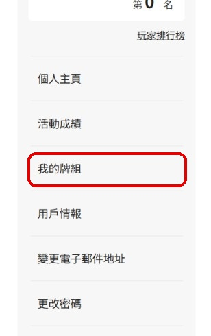
2點選「登錄我的牌組」
在「我的牌組」頁面點選黑色的「登錄我的牌組」按鈕。每個帳號最多可登錄 20 副牌組。
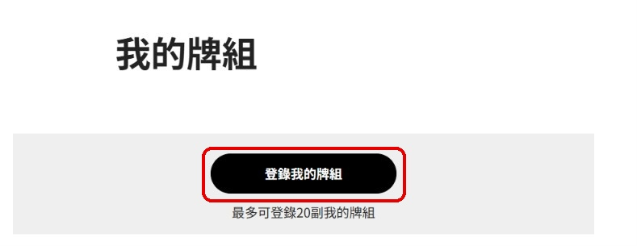
3選擇登錄方式
有兩種方式：
① 尚未建好牌組：點左側「牌組構築工具」，從頭建一副牌組。
② 已有牌組編碼：在右側選擇公開／非公開，填入牌組編碼與牌組名稱（40 字以內），按「登錄」即可完成，可直接跳到第八步。
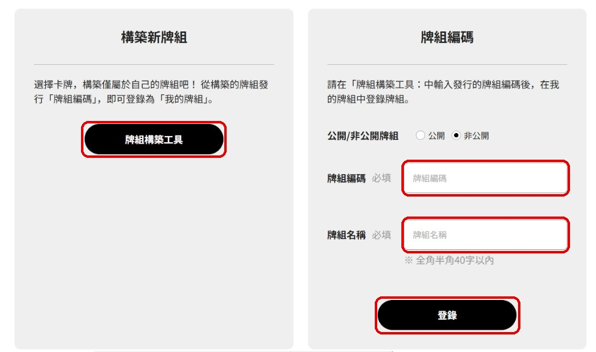
4在牌組構築工具中挑選卡牌
在左側用關鍵字搜尋卡牌（寶可夢名、招式名等），中間是搜尋結果，把想要的卡牌拖曳到右側虛線框中。
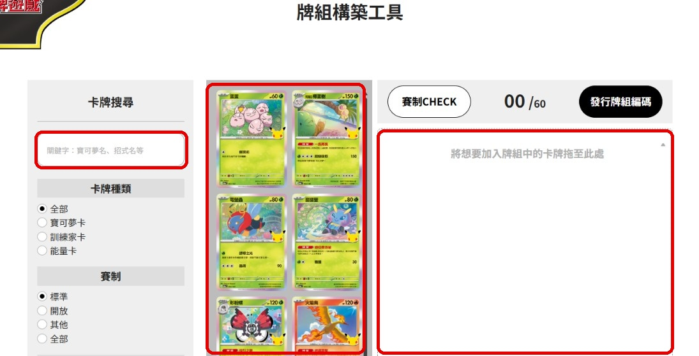
5確認牌組數量為 60 張
右上角的數字必須是 60 / 60。可先按「賽制CHECK」檢查牌組是否符合賽制，確認無誤後按「發行牌組編碼」。
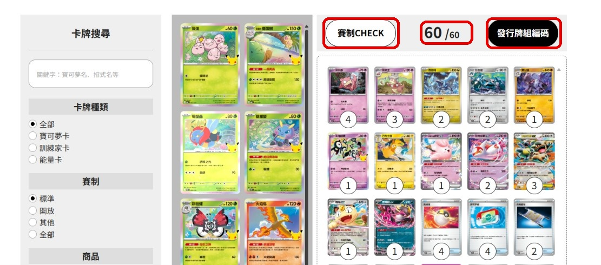
6取得牌組編碼並登錄
系統會產生一組牌組編碼（建議截圖或複製保存），接著按「登錄我的牌組」。
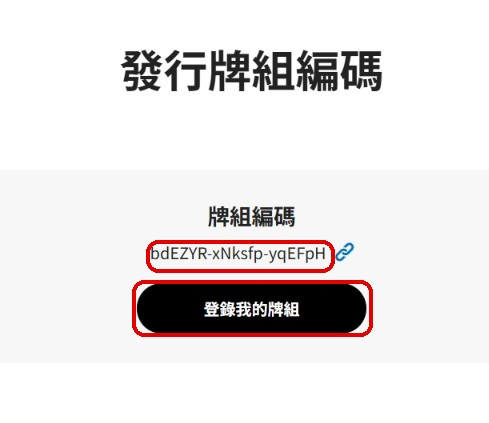
7設定公開／非公開與牌組名稱
選擇牌組要公開或非公開，輸入牌組名稱（40 字以內，必填），再按「登錄」。
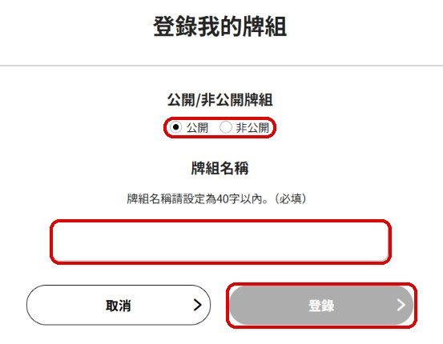
8確認牌組已登錄
回到「我的牌組」，清單中出現剛才的牌組，代表牌組已儲存到帳號中。接下來要把牌組登錄到你報名的比賽。
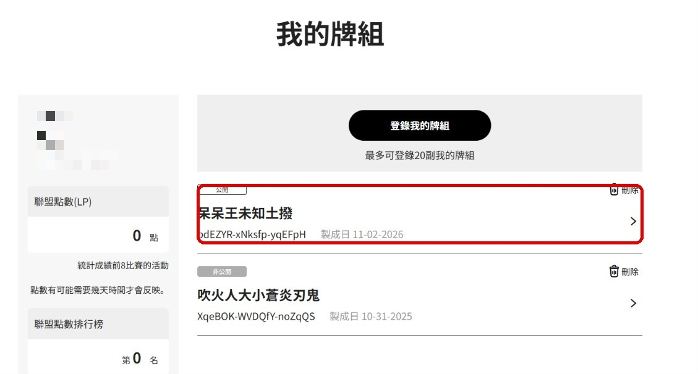
9在報名中的活動按「牌組登錄」
回到個人主頁，在「報名中的活動」找到你的比賽，按「牌組登錄」。請留意紅字的牌組登錄截止日，未提交可能會被判負或失去資格。
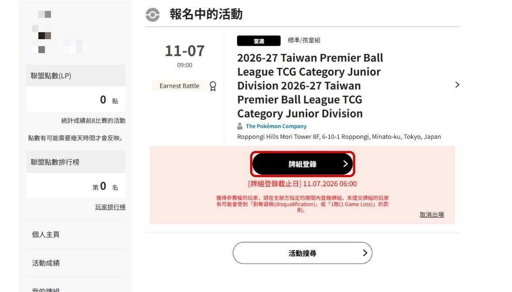
10選擇要參賽的牌組
勾選要用於這場比賽的牌組，再按「登錄牌組」。
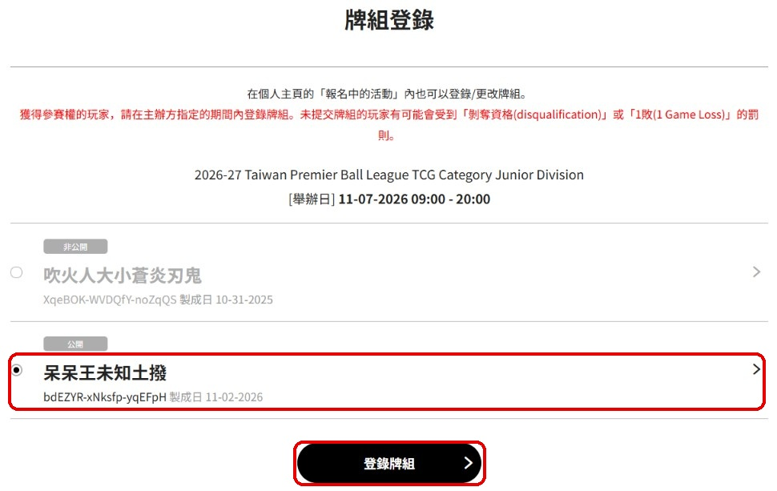
11確認比賽使用的牌組
活動下方會顯示「登錄中的牌組」及其編碼，代表比賽牌組登錄完成。若要更換，在截止日前按「更改登錄牌組」即可。
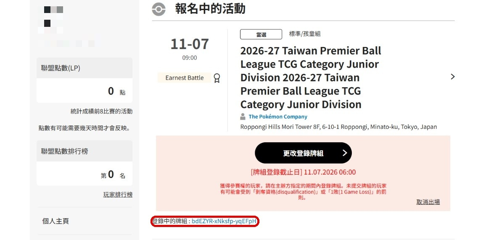